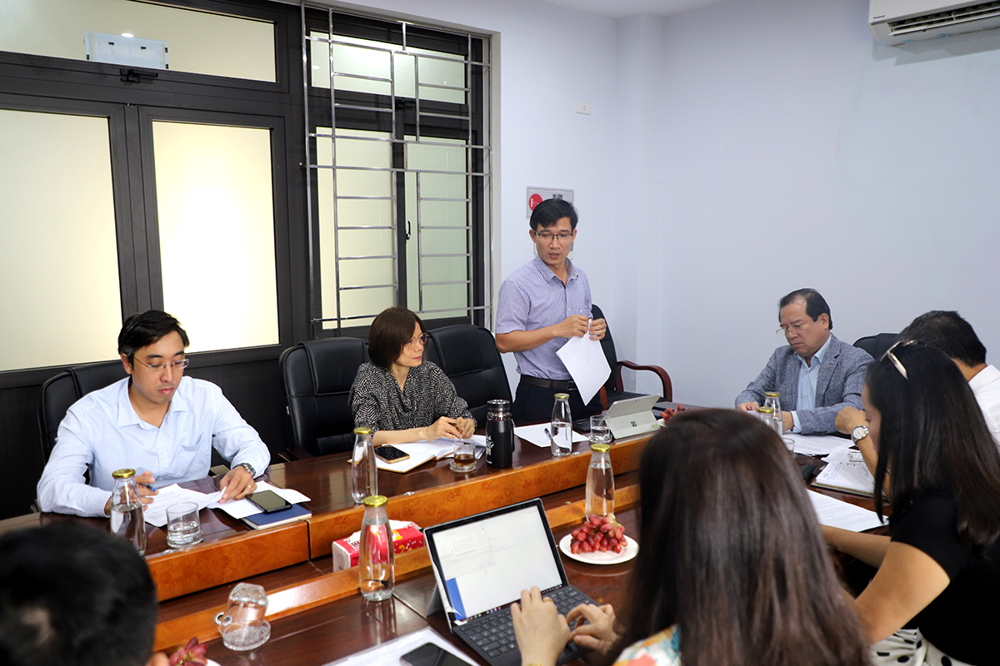
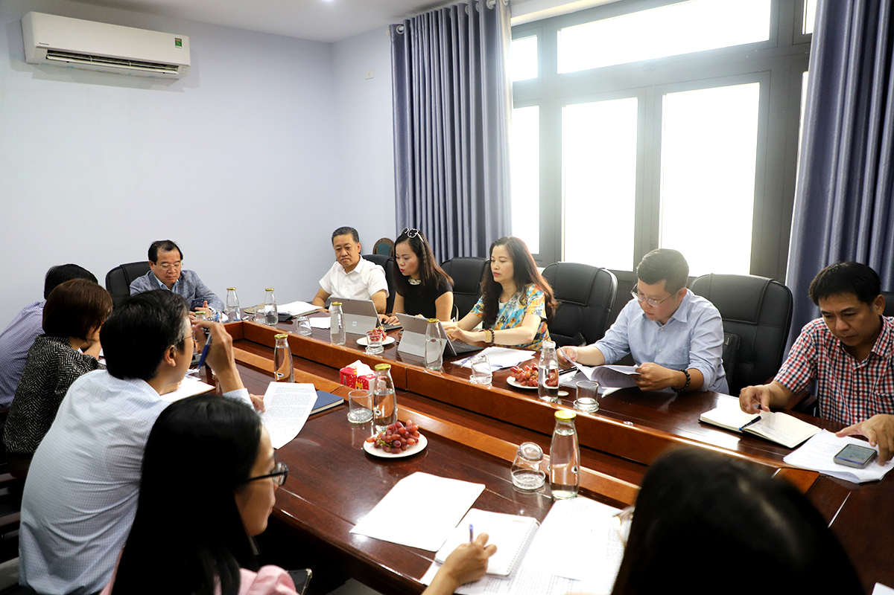
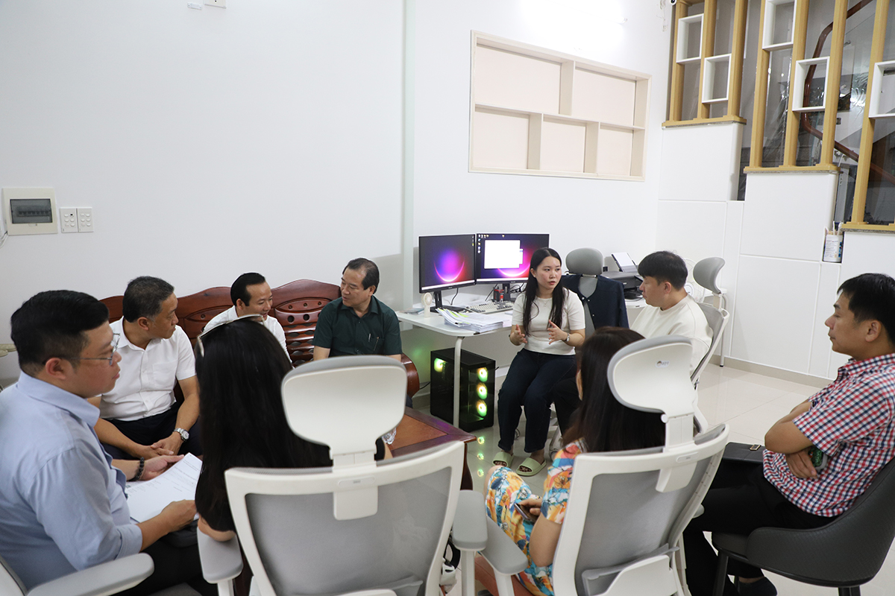

HOẠT ĐỘNG CỦA NGÀNH
Cục Du lịch Quốc gia Việt Nam kiểm tra việc chấp hành quy định pháp luật về du lịch tại TP Đà Nẵng
Cập nhật: 24/10/2025 11:11:17
Số lần đọc: 216
(TITC) - Sáng ngày 23/10, thực hiện chương trình kiểm tra công tác chấp hành các quy định pháp luật trong lĩnh vực du lịch năm 2025 tại TP Đà Nẵng, Phó Cục trưởng Hà Văn Siêu dẫn đầu đoàn công tác Cục Du lịch Quốc gia Việt Nam đã có buổi làm việc với Sở Văn hóa, Thể thao và Du lịch TP Đà Nẵng nhằm kiểm tra công tác quản lý nhà nước trong lĩnh vực lữ hành, hướng dẫn viên du lịch, khu/điểm du lịch trên địa bàn Thành phố.
Cùng tham gia đoàn còn có lãnh đạo, cán bộ Phòng Lữ hành (Cục Du lịch Quốc gia Việt Nam), Vụ Khoa học, Công nghệ, Đào tạo và Môi trường (Bộ VHTTDL). Về phía Sở Văn hóa, Thể thao và Du lịch TP Đà Nẵng có Phó Giám đốc Tán Văn Vương và lãnh đạo, chuyên viên các phòng nghiệp vụ của Sở.
Theo kế hoạch, sau khi làm việc với Sở VHTTDL TP Đà Nẵng, Đoàn công tác sẽ tiếp tục phối hợp với Sở đi kiểm tra hoạt động kinh doanh lữ hành của một số doanh nghiệp, điểm du lịch tại Đà Nẵng đến ngày 24/10.
.jpg)
Phó Cục trưởng Cục Du lịch Quốc gia Việt Nam Hà Văn Siêu phát biểu tại buổi làm việc. Ảnh: TITC
Tại buổi làm việc, Phó Cục trưởng Hà Văn Siêu cho biết, nội dung làm việc của Đoàn với Sở VHTTDL tập trung ở các nội dung như trao đổi nghiệp vụ trong công tác cấp thẻ hướng dẫn viên du lịch, cấp giấy phép kinh doanh dịch vụ lữ hành nội địa, công nhận khu du lịch cấp tỉnh, điểm du lịch; nâng cao hiệu quả công tác quản lý nhà nước đối với hoạt động lữ hành, hướng dẫn du lịch, quản lý khu/điểm du lịch. Kiểm tra việc chấp hành các quy định của pháp luật trong hoạt động kinh doanh dịch vụ lữ hành, hướng dẫn du lịch, quản lý khu/điểm du lịch.

Quang cảnh buổi làm việc. Ảnh: TITC
Báo cáo với Đoàn về tình hình hoạt động doanh nghiệp lữ hành, đại diện Sở VHTTDL Đà Nẵng cho biết, tính đến tháng 9/2025, trên địa bàn TP Đà Nẵng có 699 đơn vị lữ hành, trong đó có 151 công ty lữ hành nội địa, 439 công ty lữ hành quốc tế, 53 CN lữ hành quốc tế, 35 VPĐD, 17 đại lý du lịch, 04 VPĐD của doanh nghiệp kinh doanh dịch vụ lữ hành nước ngoài; 6.653 hướng dẫn viên du lịch, trong đó có 4.736 hướng dẫn viên quốc tế, 1.813 hướng dẫn viên nội địa, 104 hướng dẫn viên tại điểm.
Hiện nay, trên địa bàn thành phố Đà Nẵng có 57 khu điểm du lịch. Tính đến tháng 9/2025, thành phố Đà Nẵng có 27 khu, điểm của lịch đã được công nhân theo quy định của Luật Du lịch.

Phó Giám đốc Sở VHTTDL Đà Nẵng Tán Văn Vương báo cáo tại buổi làm việc. Ảnh: TITC
Công tác quản lý hoạt động kinh doanh lữ hành, hướng dẫn du lịch tại địa phương được triển khai thực hiện nghiêm túc. Trong 9 tháng đầu năm 2025, Sở VHTTDL tiếp tục triển khai tuyên truyền, hướng dẫn các doanh nghiệp lữ hành, hướng dẫn viên thực hiện các quy định pháp luật liên quan đến lĩnh vực du lịch, rà soát, đề xuất, kiến nghị cấp có thẩm quyền về những vướng mắc, bắt cập của các quy định pháp lý và thực thi ảnh hưởng đến hoạt động lữ hành, hướng dẫn du lịch, thường xuyên ban hành các văn bản nhắc nhớ, chỉ đạo nghiêm túc thực hiện quy định pháp luật, đảm bảo an ninh, an toàn trong hoạt động du lịch, đặc biệt là trong các dịp lễ, Tết, thời điểm diễn ra các sự kiện, lễ hội của thành phố. Phối hợp Chi hội HDV tiếp nhận, xử lý, giải quyết các vướng mắc, khó khăn, các vấn đề nóng phát sinh liên quan đến HDV.
Trong 9 tháng đầu năm 2025, Sở VHTTDL đã tổ chức 09 khóa cập nhật kiến thức dành cho hướng dẫn viên đến hạn đổi thẻ, cấp 687 chứng nhận. Ngoài ra, Sở VHTTDL đã chủ trì tổ chức 03 chương trình gặp mặt các đơn vị kinh doanh dịch vụ lữ hành trên địa bàn thành phố nhằm trao đổi thông tin, bàn giải pháp thu hút các thị trường khách trong nước và quốc tế, nâng cao chất lượng dịch vụ, phục vụ khách du lịch.
Lãnh đạo và chuyên viên Sở Văn hóa, Thể thao và Du lịch TP Đà Nẵng tại buổi làm việc. Ảnh: TITC
Về công tác kiểm tra thực tế tại các khu, điểm du lịch được duy trì thường xuyên, giúp kịp thời phát hiện, chấn chỉnh những tồn tại, hạn chế, đồng thời nâng cao tính tuân thủ pháp luật, bảo đảm hoạt động du lịch an toàn, văn minh và thân thiện. Song song đó, Sở thường xuyên hướng dẫn, giám sát việc thực hiện chế độ báo cáo thống kê của các khu, điểm du lịch, các báo cáo được lập và gửi định kỳ, đầy đủ, góp phần cung cấp dữ liệu tin cậy phục vụ công tác theo dõi, đánh giá và quản lý điểm đến trên địa bàn thành phố.
Nhìn chung, công tác quản lý nhà nước đối với các khu, điểm du lịch trên địa bàn thành phố Đà Nẵng đã được triển khai đồng bộ và hiệu quả. Hoạt động kiểm tra, hướng dẫn, nhắc nhở được thực hiện thường xuyên, kịp thời, các vấn đề phát sinh được xử lý nhanh chóng, hạn chế tối đa rủi ro, góp phần duy trì môi trường du lịch ổn định.
Đại diện đoàn công tác trao đổi tại buổi làm việc. Ảnh: TITC
Về công tác kiểm tra hoạt động kinh doanh dịch vụ lữ hành và hướng dẫn du lịch, trong 9 tháng đầu năm 2025, Sở đã triển khai 01 cuộc thanh tra việc chấp hành quy định pháp luật trong hoạt động kinh doanh dịch vụ lữ hành, 01 cuộc kiểm tra hoạt động kinh doanh dịch vụ lữ hành và hướng dẫn du lịch, hiện đang triển khai 01 cuộc kiểm tra hoạt động lữ hành và 01 cuộc kiểm tra hướng dẫn du lịch. Tính đến thời điểm hiện nay, Thanh tra Sở đã tham mưu, ban hành 08 quyết định xử phạt tổ chức, cá nhân vi phạm với tổng số tiền xử phạt 188,5 triệu đồng. Trong đó đã tham mưu UBND thành phố xử phạt 01 đơn vị lữ hành không thực hiện đổi giấy phép lữ hành theo quy định, xử phạt 06 đơn vị lữ hành và 01 hướng dẫn viên. Các hành vi vi phạm chủ yếu như: Không thực hiện chế độ báo cáo thống kê, không thông báo bằng văn bản về việc thay đổi người phụ trách lữ hành, không công khai tên doanh nghiệp, số giấy phép kinh doanh dịch vụ lữ hành trên biển hiệu tại trụ sở, chi nhánh, văn phòng giao dịch hoặc trong hợp đồng lữ hành hoặc trên ấn phẩm quảng cáo hoặc trong giao dịch điện tử; không có biện pháp kiểm tra, giám sát hoạt động của hương dẫn viên; không thực hiện đúng quy định và ký quỹ kinh doanh lữ hành; có thái độ thiếu văn minh đối với khách du lịch khi hành nghề,…
Tại buổi làm việc, đại diện Sở VHTTDL cũng đã nêu lên một số khó khăn, vướng mắc trong quá trình thực hiện công tác quản lý nhà nước cũng như đề xuất các giải pháp để tiếp tục nâng cao hiệu quả trong thời gian tới.

Đoàn công tác tại buổi làm việc. Ảnh: TITC
Trên tinh thần trách nhiệm và cởi mở, các thành viên trong đoàn Cục Du lịch Quốc gia Việt Nam đã trao đổi, chia sẻ nhiều thông tin liên quan đến công tác quản lý nhà nước trong du lịch; đồng thời giải đáp một số kiến nghị của Sở VHTTDL trong hoạt động quản lý nhà nước chuyên ngành. Bên cạnh đó đoàn cũng đề nghị Sở thông qua hoạt động quản lý thực tiễn tại địa phương, tiếp tục đưa ra những đề xuất, kiến nghị, nhất là tham gia góp ý sửa đổi Luật Du lịch sắp tới nhằm tạo môi trường pháp lý thuận lợi cho du lịch phát triển, đồng thời giúp cho hoạt động quản lý nhà nước chuyên ngành ngày càng hiệu quả.
Kết thúc buổi làm việc, Phó Cục trưởng Hà Văn Siêu đánh giá báo cáo của Sở VHTTDL TP Đà Nẵng trong công tác quản lý nhà nước về lữ hành, hướng dẫn viên, các khu/điểm du lịch trên địa bàn là toàn diện và đầy đủ. Qua trao đổi đã làm rõ một số vấn đề Sở còn vướng mắc trong công tác quản lý nhà nước. Đoàn công tác cũng ghi nhận những kiến nghị, đề xuất của Sở VHTTDL Đà Nẵng; đồng thời cho biết Đoàn sẽ tiếp tục cùng với Sở làm việc với các cơ sở kinh doanh, khu/điểm du lịch trên địa bàn để nắm bắt thực tế để từ đó đưa ra báo cáo cụ thể, chính xác, giúp lãnh đạo các cấp đánh giá đúng tình hình thực tiễn hoạt động du lịch của địa phương.
Chiều cùng ngày Đoàn đã phối hợp cùng với Sở VHTTDL tiến hành kiểm tra việc chấp hành quy định pháp luật trong hoạt động kinh doanh lữ hành tại một số doanh nghiệp trên địa bàn.

Đoàn làm việc với Công ty TNHH Friends Tour. Ảnh: TITC
Đoàn làm việc với Công ty TNHH MTV Du lịch và Dịch vụ Bảo Sen Vỹ. Ảnh: TITC
Nguồn: vietnamtourism.gov.vn - Đăng ngày 23/10/2025
CÙNG CHUYÊN MỤC


.jpg)
.jpg)
.jpg)
.jpg)
.jpg)
.png)